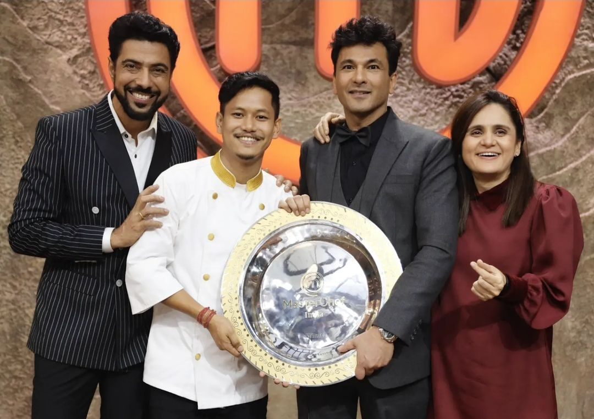

© 2024 Roohani by Nayanjyoti Saikia. All Rights Reserved
Follow us:

ABOUT
Guwahati's new global dining destination, Roohani, launched by Chef Nayan Jyoti in the heart of the city.
Spread across 7500 sq. feet area across two floors and with a seating capacity of 245, Roohani promises of
progressive Global cuisine with an influence of hyperlocal ingredients from the region.
"Roohani" (रूहानी) is a word derived from Sanskrit, which has a beautiful meaning."Rooh" (रूह) is derived from the
Sanskrit word "Ātman", which means "soul," or "essence". "Ani" (अनी ) is a suffix derived from the Sanskrit
word "Anu" (अनु), which means "related to," "belonging to," or "connected with". Together, "Roohani" can
be literally translated to "related to the soul" or "connected with the spirit." In a broader sense, it means
"spiritual," "essence," or "soulful". In various languages, including Hindi, Urdu, and Persian, "Roohani" is
used to describe something that is spiritual, mystical, or related to the soul.
Our mission is to create an unforgettable dining experience that not only delights the palate but also
nourishes the soul, as our name describes. Roohani promises to take foodies on a spiritual adventure, blending
traditional flavors with modern twists.
Open for the public from September 6, 2024, embracing the spirit of innovation and culinary mastery by
MasterChef Nayanjyoti, Roohani presents an elevated menu meticulously curated by him with local infusions.
Roohani's menu boasts an array of innovative dishes, carefully crafted to showcase the richness of local
ingredients and the chef's signature flair. Every dish in Roohani is a testament to Masterchef Nayanjyoti's
passion for storytelling through food.
Nayanjyoti Saikia is a distinguished culinary talent from India, best known for winning the seventh season of MasterChef India.
His victory in the highly competitive cooking reality show, which aired in 2020, catapulted him to fame and solidified his position as
one of the most promising chefs in the country. Nayanjyoti's exceptional cooking skills, coupled with his humble background and
dedication to the craft, won the hearts of judges and audiences alike.

Originally from Assam, Nayanjyoti hails from a family with no prior culinary background, yet his passion for cooking led him to pursue
his dream. His ability to blend traditional Assamese flavors with modern techniques and presentations made him stand out throughout
the competition. His innovative approach to regional cuisine, particularly his use of locally sourced ingredients and his focus on
sustainability, earned him widespread admiration.
His dishes are not just about taste, but also about sharing the flavors of his heritage with the world. He
emphasizes sustainability, working with local farmers and suppliers to source the freshest ingredients, which
are both traditional and seasonally available. They are deeply rooted in Assamese culture, while also
incorporating modern twists, making it a perfect blend of regional authenticity and contemporary presentation.
Nayanjyoti’s win on MasterChef India not only brought him significant recognition but also opened doors for him to further his
career in the culinary industry. He has since used his platform to explore opportunities in restaurant ventures, food consultancy, and
mentoring young aspiring chefs. His journey serves as an inspiration to many, exemplifying how talent, determination, and a deep love
for food can lead to extraordinary success.
As the Head Chef of Roohani, Nayanjyoti leads the kitchen with a deep understanding of Assamese
culinary traditions and a passion for evolving those flavors. The heart of the kitchen is the team of sous
chefs and culinary experts who work closely with Nayanjyoti to execute his vision.
Desserts play a crucial role in showcasing the finesse of a restaurant, and Roohani is no different. The head
of pastry is responsible for crafting sweet endings to a meal that blend the traditional sweetness of Indian
desserts with cutting-edge techniques.
At Roohani, the dining experience is as much about hospitality as it is about the food. The front-of-house team
is trained to provide impeccable service, ensuring that every guest feels welcomed and cherished.
Sustainability is likely a key tenet of the restaurant’s operations. The team includes advocates for sourcing
locally, reducing waste, and championing eco-friendly practices. Roohani may collaborate with local farmers and
artisans to bring the freshest ingredients to the table while promoting environmental responsibility.